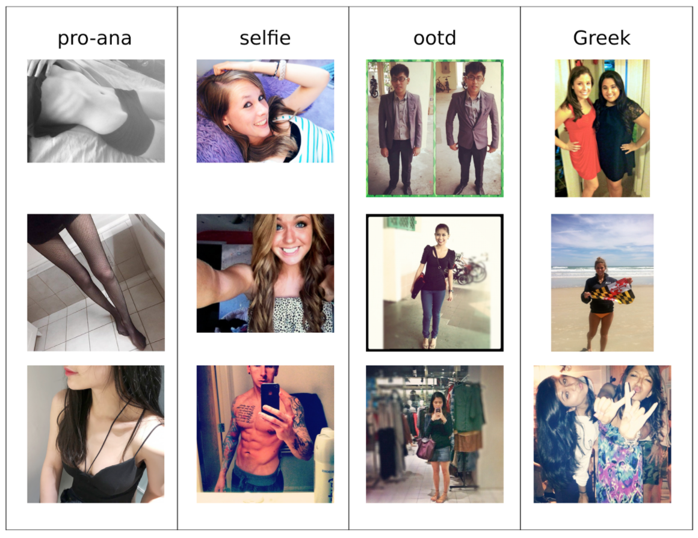

Computer Vision Final Project : Recognizing Images with Deep Learning
Introduction:
Eating disorders (ED) are pervasive and do not discriminate based on race, religion, gender, or socioeconomic status. Comorbidities include anxiety, depression, substance abuse, self-injurious behaviors, and history of trauma. ED are often a lifelong struggle, with approximately 2/3 of patients never achieving a full and sustained remission. Exposure to media expressing “the thin ideal” can be triggering to individuals with ED as well as those at risk for developing them. Social media is rife with these triggers. Concurrent with the rise of social media, individuals with ED have created communities in which they support one another in the dangerous pursuit of this illness' goal: to be “thin enough.” Websites promoting anorexia (pro-ana) and ED as lifestyle choices valorize acting on ED symptoms. Such sites teach those suffering or at risk from ED how to act on the illness and support them in doing so, putting them at risk for severe health complications. The impact of images in this community far exceeds that of other communities surrounding physical and mental health issues. Therefore, it is essential that clinicians and family members be able to identify websites containing images associated with the promotion of ED to prevent exposure to these triggers. My project, part of my ongoing work with Dr. Pless, aims to use deep learning to automatically detect such triggering material, with the ultimate goal of designing parental and clinical controls to classify internet content. I decided to use machine learning to identify pro-ana and pro-eating disorder content, trained on example data from online social media searches.Dataset gathering:
Over the past 8 months, our research group has accumulated a massive, hashtag-labeled dataset. We used python to scrape the images from twitter, tumblr, and flickr. I chose hashtags to get us training data that compares pro-ana content with other content similar in demographics and photographic style. We scraped images from each hashtag-based category:- #proana
- #selfie
- #ootd
- #greek
Sample Images from each category

{kind=link}
proana |
not proana |
Classifier Design
In designing the classifier, I chose the training data to compare pro-ana content with other content similar in demographics and photographic style, composed of the hashtag-based categories #proana, #selfie, #ootd, and #greek. These were 4 distinct classes.
The hashtags #selfie, #ootd, and #greek made up the non-pro-ana class (NPA). #proana was the proana class (PA).Implementation:
I used PyTorch and the Resnet Deep Learning framework pretrained on the ImageNet dataset. I trained the last several layers of the model into the two categories: proana (PA) and not proana (NA).Training settings
I used the following settings when training the Resnet architecture.- Solver: Stochastic Gradient Descent (SGD )
- Initial learning rate 0.1
- learning rate decay factor: 0.1
- Momentum: 0.9
- Decay epochs: 16
- Batch size: 175
- Total Epochs: 15
- layers: 512
- Hardware: 2 NVIDIA Teslas (accessed via linux server)
Training Results
In the first iteration, I randomly chose 20% of these images as test data and trained the Resnet neural network to classify the remaining images. On test data this gives 80% classification accuracy—a significant improvement over chance (50%).
Stress-testing Results
To assess the robustness of our classifier, I examined its performance on images with subjects and demographics underrepresented in our training set. With n=2436 photos, I evaluated our dataset for "challenging" non-pro-ana (NPA) and pro-ana (PA) examples. In the PA set, one site contained images of men; the rest were similar to our pro-ana set. For the non-pro-ana NPA set, we selected sites that were likely to show underweight people, a proliferation of exposed skin, or people of color. Here is a sample of some of the images: The total results of the tests and classification of each set of images is here:Despite our hypothesis that roughly half of the image types in the pro-ana test set would be difficult to classify, the results are encouraging. However, we do have a problem with pro-ana false positives. One potential explanation for this could be class overlap and noisiness of the dataset: for example, a pro-ana selfie is still a selfie.